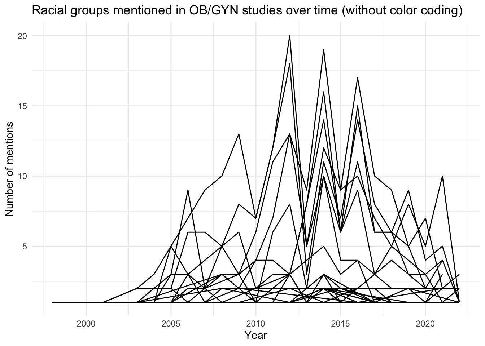
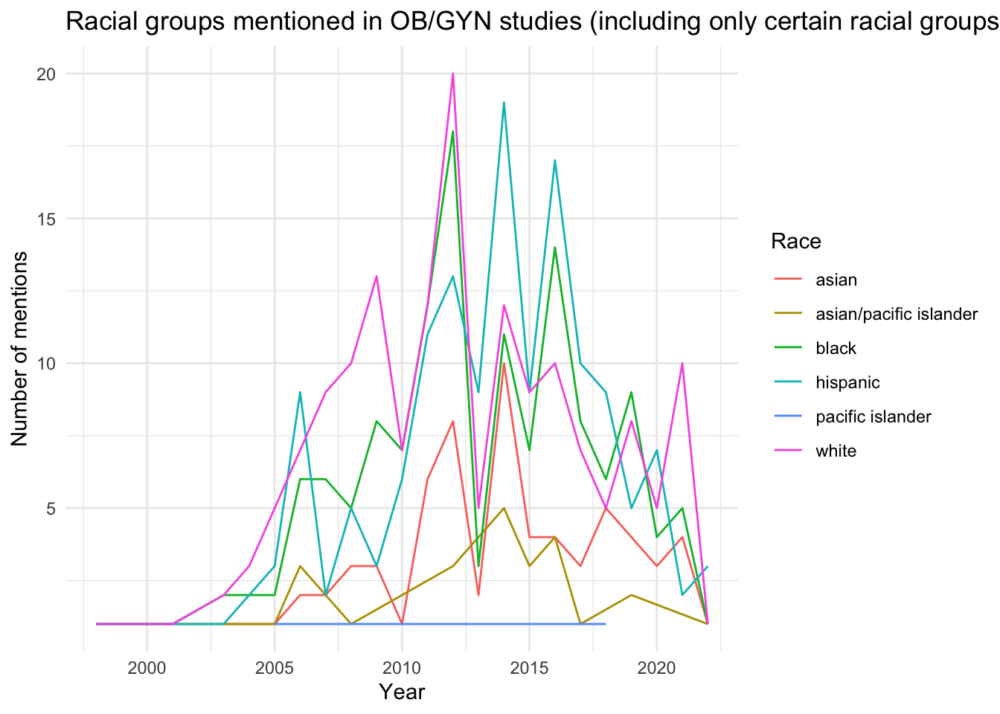

An analysis of racial categories mentioned in leading ob-gyn journal articles on health disparities over time
Author
Abigail Krenz
Published
December 6, 2025
Drawing from a data set of articles on racial and ethnic health disparities from the eight highest-impact OB/GYN journals, I hoped to visualize how the language used to describe racial categories in these medical studies had changed over time. In the process, I encountered some instructive challenges in data wrangling. As you can already see in the graph above (and repeated below), researchers used an extraordinary variety of terms to describe racial categories, making it difficult to discern patterns in their use.
I began by identifying all racial categories mentioned in the articles and the number of times they appeared. You can see the first ten lines of the wrangled data frame below:
Show the code
library(tidyverse)library(plotly)#Loads datatuesdata <- tidytuesdayR::tt_load('2025-02-25')article_dat <- tuesdata$article_dat#Wrangles racial categories and adds up the number of articles in which they appeared.race_language <- article_dat |>select(study_year_end, race1, race2, race3, race4, race5, race6, race7, race8) |>pivot_longer(cols = race1:race8, names_to ="RaceNumber", values_to ="race") |>mutate(race =str_to_lower(race)) |>group_by(study_year_end, race) |>summarize(count=n()) |>filter(is.na(race) ==FALSE) |>filter(study_year_end!=-99)#Displays first three rowshead(race_language, 10)
# A tibble: 10 × 3
# Groups: study_year_end [2]
study_year_end race count
<dbl> <chr> <int>
1 1998 american indian 1
2 1998 asian/pacific islander 1
3 1998 black 1
4 1998 hispanic 1
5 1998 unknown 1
6 1998 white 1
7 2001 black 1
8 2001 hispanic 1
9 2001 other 1
10 2001 white 1
Next, I created a basic line graph of the illustrating how many times a certain term for a racial category was used. Because it uses undifferentiated black lines, it is not easy to see that most terms were not used at all for most years. Additionally, it is not possible to identify which line refers to which term.
Show the code
#Line graph (without color)ggplot(data = race_language, aes(x=study_year_end, y=count, group=race)) +geom_line() +labs(title ="Racial groups mentioned in OB/GYN studies over time (without color coding)",x ="Year",y ="Number of mentions" ) +theme_minimal()

There is no discernable pattern or trend across the time period, and many terms are mentioned only once. The undifferentiated black lines make identifying specific terms impossible.
However, when I assigned a specific color to each term in the graph below, there were so many categories that the legend obscured the entire graph.
Show the code
#Line graph with colorggplot(data = race_language, aes(x=study_year_end, y=count, color=race)) +geom_line() +labs(title ="Racial groups mentioned in OB/GYN studies (with color coding)",x ="Year",y ="Number of mentions" ) +theme_minimal()
There are so many racial categories that the legend takes up the entire space.
Adding interactive hover labeling in the graph below through plotly partially addressed this problem by allowing the viewer to more easily identify which line referred to which term.
Show the code
plot <-ggplot(data = race_language, aes(x=study_year_end, y=count, color=race, text =paste('Race:', race))) +geom_line() +labs(title ="Racial groups mentioned in OB/GYN studies over time (with interactive labeling)",x ="Year",y ="Number of mentions",color ="Race" ) +theme_minimal()#Hover labellingggplotly(plot, tooltip ="text")
Interactive hover labelling makes identifying specific racial categories on the graph easier, but with so many lines are overlapping, it is still difficult to see all the categories.
Finally, I chose to filter out all racial categories except for white, Black, Asian, Hispanic, and Pacific Islander to see if I could discern a pattern in the use of these terms over time.
Show the code
#Filtered for certain racial categoriesrace_language2 <- race_language |>filter(race =="white"| race =="black"| race =="pacific islander"| race =="asian"| race =="asian/pacific islander"| race =="hispanic")#Line graphggplot(data = race_language2, aes(x=study_year_end, y=count, color=race)) +geom_line() +labs(title ="Racial groups mentioned in OB/GYN studies (including only certain racial groups)",x ="Year",y ="Number of mentions",color ="Race" ) +theme_minimal()

White, Black, and Hispanic were mentioned a fairly comparable amount, Asian and Asian/Pacific Islander were mentioned less, and Pacific Islander was not mentioned at all.
Although this graph sacrifices information, it shows that white, Black, and Hispanic populations have been studied more extensively than Asian Americans and Pacific Islander populations have been. Indeed, Pacific Islanders were not mentioned at all as a singular group. This finding suggests that researchers should prioritize more disaggregated studies of Pacific Islanders to better understand their unique reproductive health needs. The high level of year-to-year variation makes it difficult to discern whether there was any particular trend in the mentions of these terms over time.
Conclusion:
None of these graphs clearly captured all of the information due to the inconsistency in how racial groups were described and categorized across OB/GYN studies. Although this diversity is perhaps to be expected, it makes it more difficult for researchers to identify and compile health research focused on a specific racial group.
Original source: Lewis, Ayodele G. et al. “Racial and ethnic disparities in reproductive medicine in the United States: a narrative review of contemporary high-quality evidence” American Journal of Obstetrics & Gynecology, Volume 232, Issue 1, 82 - 91.e44. https://pubmed.ncbi.nlm.nih.gov/39059596/.